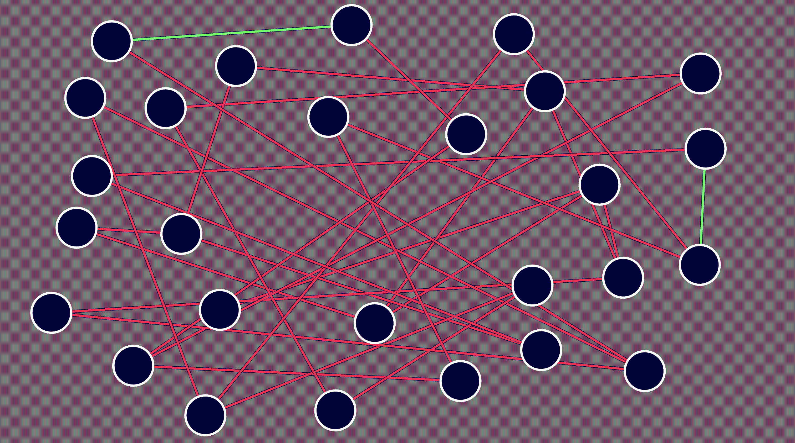
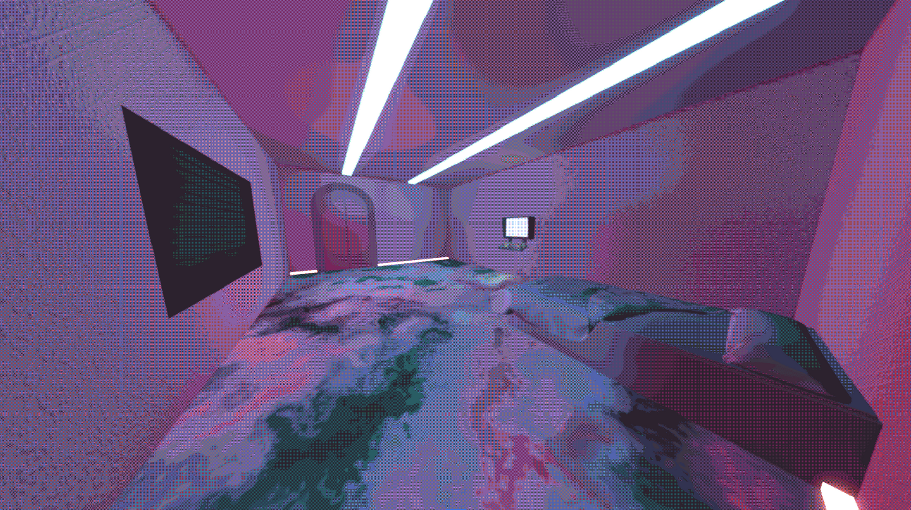

Why Make This Game?
My goal with A Heavy Heart was to evolve the gameplay alongside the storyline and environment, partially inspired by the Portal series. While concepting, I had decided to sddress the struggles of mental health, specifically what I struggle with: anxiety and depression. The primary in-game element driving this is a black hole-powered device strapped to the players chest. This device comes from a more personal inspiration; I generally describe the physical feeling of anxiety and depression as an inwards pull in my chest, almost like a black hole. It acts as the tangible metaphor for mental health, but is also the main driver for evolving gameplay, story, and environment illustrating how mental health struggles affect the self.
Design Philosophies
-
Game Design
I set out to to create a tight gameplay loop without too much fluff, an interesting interaction that felt extensive, but not bloated. A big inspiration in this aspect was the Katamari Damacy series. To achieve this, I used subtractive game design. This constitutes that only the parts of the game that are meaningful to the overall design are kept. Knowing the intention of the game early on in concepting allowed me to consider in what ways were components of gameplay meaningful to that intention. Through prototyping, I was able to create a core mechanic that felt it helped to convey my message.

Working on this project solo guaranteed that my design would exist within my own echo-chamber, so testing was vital. Feedback through testing ensures that elements are absolutely necessary and iterating with that feedback further refines those elements.
-
Technical Design
So often I have heard tales of the dreaded spaghetti code. I imagined I would not be able to completely avoid it with my lack of experience on a game of this scope, but I knew I could could mitigate it a considerable amount. When creating the gameplay systems in my chosen engine, Godot, I made sure any systems that weren't one time use were scalable. This helped with subtractive game design and my concerns about scope. By making scalable systems, I was able to make the size of the game as big or small as it needed to feel tight and meaningful. Most systems were designed to be modular through components using Godot's Resource type.
For the 3D puzzles, the system to move the spheres on the paths of the puzzle is scalable in size, as well as shape, as long as the paths are connected. I also created a component based system to add on effects to specific points of the puzzle, specific paths, as well as on the puzzle as a whole. For the 2D puzzle, any number of nodes can be added and connected to create a web of nodes to untangle. To facilitate the order and transition between 2D and 3D puzzles, I created a state machine that could work for both types of puzzle, loading in the correct puzzle in the sequence of puzzles, as well as controlling when the player can interact with which type of puzzle.
-
Aesthetics Design
The game's aesthetics were built on the intention I had for this game, but they also had to fit my goals of scope and be meaningful to the message I want to convey. I knew that the aesthetics had to be minimal, but I still needed room for the crucial stylization to help convey meaning.
My original visual concept was low poly 3D models with stylized texturing. After initial testing of this original visual style, I quickly realized it was going to add too much to the scope, and didn't feel like it belonged to this game. I needed something that was going to communicate my intention and still be completed within the scope I set.

The visual style was changed to use Godot's realistic lighting features while utilizing a dither post-process shader, inspired by Antti Tiihonen. The dither shader adds to the eeriness of the game, but it also lets me control colors through a limited palette. The final palette I used in the game creates two distinctly unwelcoming environments in the test chamber. The half of the test chamber the player resides in becomes bright and sickly; the texturing of the surfaces makes the player feel uneasy whichever way they look. The half of the test chamber where the 3D puzzles are solved turns into a dark, uninviting space that glows with an evil intent.